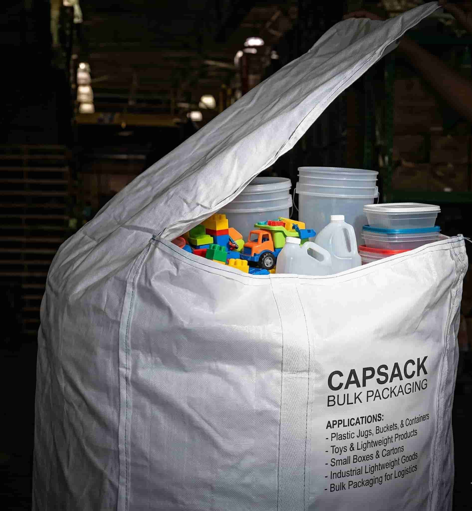
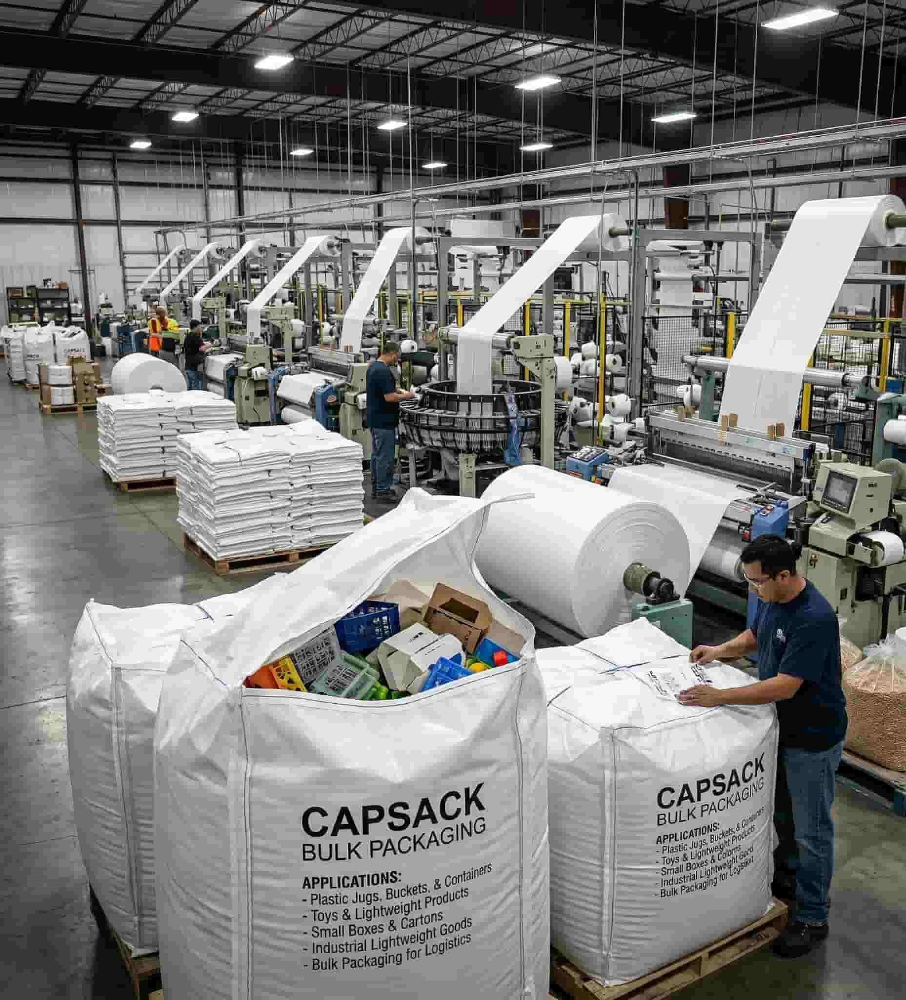

High-quality PP capsacks used for industrial and export packaging
Capsacks are widely used in industries for bulk packaging due to their strength, durability and cost efficiency. If you are looking for a reliable capsacks manufacturer in India, this guide will help you understand everything before placing a bulk order.
Capsacks are made from woven polypropylene (PP) fabric and are designed for heavy-duty packaging. These bags are commonly used in agriculture, chemical, fertilizer and export industries.

Capsacks are one of the best solutions for industries looking for reliable and cost-effective packaging.
We supply capsacks in bulk quantities, including full container load (FCL) orders. Our products are manufactured to meet export quality standards.
Use our calculator to estimate capsacks weight and pricing instantly.
Calculate Bag CostGet the latest price and availability directly from manufacturer.
Chat on WhatsAppCapsacks are a reliable packaging solution for multiple industries. Choosing the right manufacturer ensures better quality, pricing and long-term business growth.
At Dwarkesh Polyfab, we provide high-quality capsacks for domestic and export markets with a focus on durability and performance.